Introduction
Hello again! Remember our last blog where we touched on the significance of data cleansing in Power BI? Today, we’re diving deeper into this crucial process. Cleaning data is not just a preliminary step; It’s the foundation that supports robust analysis. With helpful screenshots, I’ll guide you through the process, ensuring you can follow along and apply these techniques to your own data.
Step 1: Import Data to Power BI
Open Power BI Desktop and click on the Get Data icon. This step is crucial as it’s the starting point of bringing your raw data into Power BI. The choice of the correct dataset is vital, as it determines the quality and relevance of the data you’ll be working with.
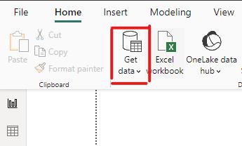
Step 2: Selecting the Right Dataset
Once the data is loaded, proceed by clicking on the Transform Data button. This opens the Power Query Editor, which is the main workspace for your data cleansing process.
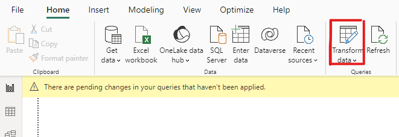
At first glance, you may find the dataset to appear unstructured, with columns lacking meaningful titles and filled with null values. The objective here is to organize this chaos into a coherent and structured dataset.
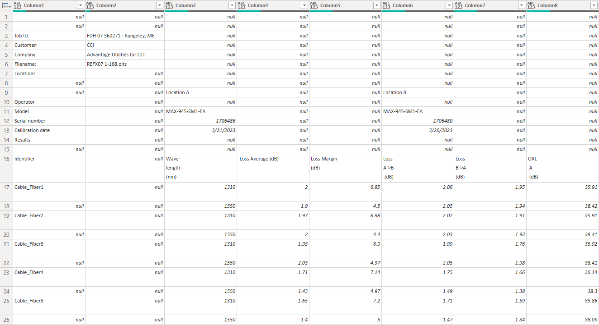
Step 3: Skipping the First 15 Rows
The first 15 rows of your dataset might include preliminary information that is not relevant to your analysis. Using the Remove Top Rows function, discard these rows to focus your analysis on the data that starts from row 17. This step is essential in ensuring that you are analyzing the data that truly matters for your insights.
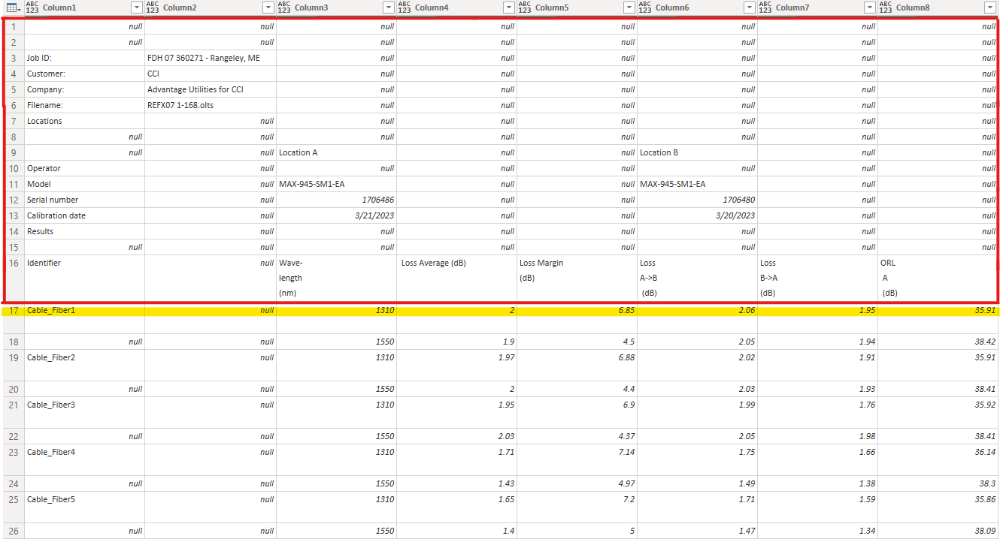
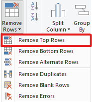
Remove Top Rows icon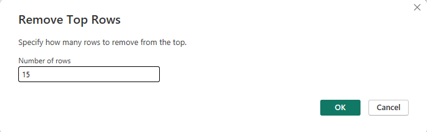
Step 4: Setting Headers
Before setting headers, evaluate your current data. Typically, the first row contains what should be the column headers.
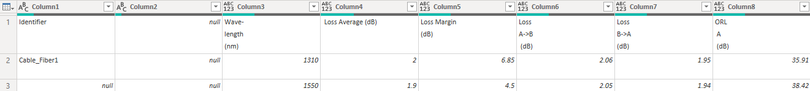
To promote this row to headers, navigate to the Transform tab and select Use First Row as Headers. This action organizes your data, ensuring each column is correctly labeled for easier interpretation and analysis.
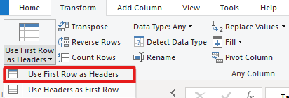
This simple action automatically updates the first row as your column titles.
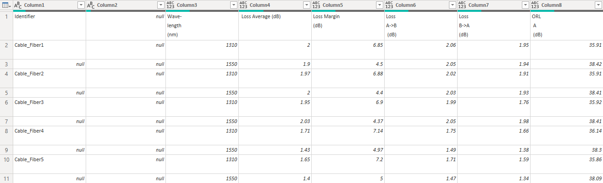
Step 5: Selecting Relevant Columns for Further Analysis
With the headers now accurately set, the next step involves focusing on the columns that are essential for your analysis. This process, achieved through the Remove Other Columns feature, is crucial for maintaining a streamlined and relevant dataset. By selecting only the columns you need, you avoid clutter and ensure that your analysis is based on pertinent data.
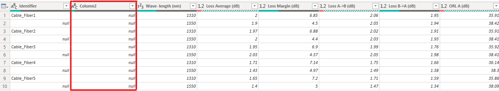
Select the columns you wish to retain, then use the Remove Other Columns button to exclude the rest. This targeted approach simplifies your dataset, leaving only the data that is truly significant for your analysis.
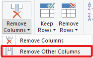
Step 6: Filling Down the Identifier Column
In many datasets, especially those with multiple attributes for each entry, it’s common to find gaps or inconsistencies. In the Identifier column, you might notice null values appearing intermittently. To address this, use the Fill Down function. This ensures that each row in the Identifier column is consistently populated, maintaining accuracy and continuity in your dataset.
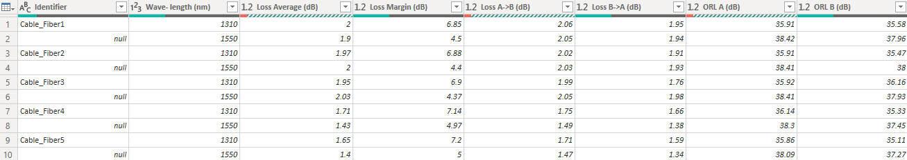 After selecting the Fill option, choose Down to propagate the data correctly in the Identifier column.
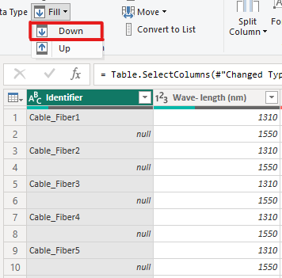
This step results in a fully populated Identifier column, which is essential for accurate categorization and analysis.
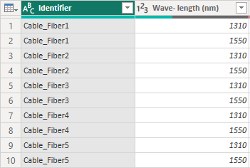
Step 7: Filtering Out Irrelevant Rows
The next step involves scrolling to the bottom of your dataset and removing any rows that don’t contribute to your analysis. This step is often overlooked but is critical in ensuring the integrity of your data analysis. By removing these irrelevant rows, you prevent the inclusion of extraneous or erroneous data in your final analysis.
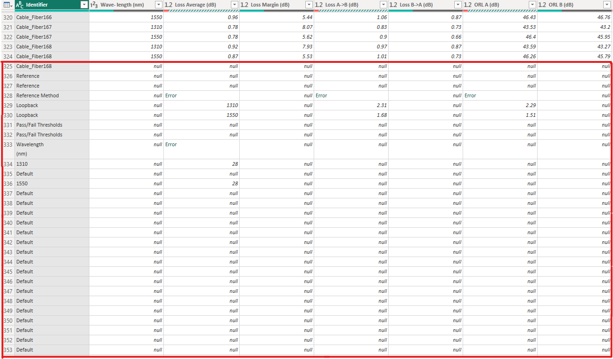 Identify and exclude these unnecessary rows to keep your dataset focused and relevant.
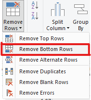
Step 8: Transforming Data Type
It’s essential to ensure that each column in your dataset reflects the correct data type. This step, which involves setting columns to appropriate data types such as text, numbers, or dates, is fundamental for accurate interpretation and analysis. For instance, the Identifier column should be set as text, while the Date/Time column should be a date/time data type. Correct data types are vital for processing and analyzing your data accurately.
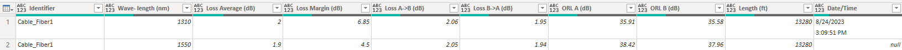
To change the data type, right-click on the column title, such as Date/Time, and select the appropriate type. This ensures each column is processed correctly in subsequent analyses.
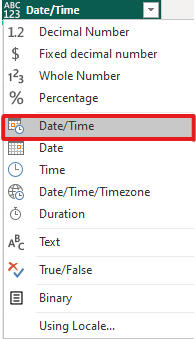
P.S.: It’s advisable to transform the data types towards the end of the cleansing process, after you’ve gained a better understanding of what the data looks like and which data type each column should be. The data types should now appear correctly set for each column, ensuring accurate processing in Power BI.
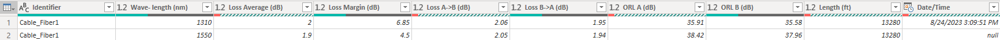
Step 9: Adding a CableNumber Column (To be covered in the next blog)
The final step in our data cleansing journey, which involves adding a CableNumber column, will be thoroughly discussed in our next blog. This addition is crucial for creating slicers in Power BI dashboards, enhancing the functionality of your dataset for deeper, more granular analysis.
Upcoming Topics
In our next blog, we’ll explore the advantages of using Power BI over other visualization tools like Tableau, particularly for fiber optic data visualization. Stay tuned for more insights and hands-on tips in our data science adventure!